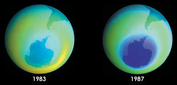

Hole in Ozone Layer Gone Undetected until 1985 (41) (44)
In 1985 a British team of scientists discovered a significant reduction in the amount of ozone over Halley Bay in Anartica, by 40 %. This came as a shock to the scientific cummunity, as it was expected that the the ozone had to be depleted in the upper levels of the stratoshpere before – which was not seen – would occur before such a large reduction in the amounts of ozone could take place. However, it was discovered that a reduction of ozone in the entire Anartica had actually been found 8 years prior – only that a bug caused the analysis software to ignore values that were deemed to deviate too greatly from expected values. Therefore no one noticed that abnormal values had been found for 8 whole years. (41)
Social Impact
The major impact of the bug has been that 8 years have been spent not knowing how quickly the ozone layer was diminishing. This meant that the rate at which ozone depletes was underestimated. (44)
It also resulted in a much more severe issue being created than if the fall in ozone had been discovered in a more timely manner. As the environment affects all beings on earth, this bug has undeniably had negative consequences for all of humanity.